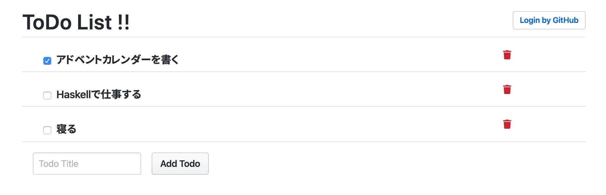

Haskell Servant に GitHub Apps による認証を追加する
時々みる「GitHubでログイン」っぽいのを Servant 製サンプルアプリケーションに実装します．
サンプルアプリケーションは2年前に書いた「Haskell × Elm のサンプルアプリケーションを書いてみた」という記事のものを，最近の GHC や Elm でリファクタリングして使います． これは簡単な ToDo アプリケーションです：

最終的な実装 PR はこれ．
GitHub Apps による認証
公式ドキュメントより
- GitHub で Apps を登録する
- Client ID・Client Secret を取得
- callback URL を設定
- ログインする際に
https://github.com/login/oauth/authorize?cleint_id=[cleint_id]へリダイレクトさせる- (1)の App の使用を許可するかという画面へ飛ぶ
- 許可すると(1)で設定した callback エンドポイントが叩かれる
- code というリクエストパラメータがついてくる
- Client ID・Client Secret と(3)の code を使うことで bearer token が手に入る
- このトークンを利用することで GitHub ユーザーの情報を取得したりできる
- (4)を利用して取得した GitHub アカウント名などを Cookie に積んでおく
あとは (5) の Cookie の有無によってログイン済みかどうかを判断するだけ（まぁこれは GitHub App とか関係ないよくあるやり方）． つまり問題は Servant でどうやってログイン情報などを Cookie に載せるかということだ．
Servant で認証機能
を作るには servant-auth-server という Servant 公式のパッケージを使えば良いようだ． 詳しくは以下の公式ドキュメントを読むと良い：
servant-auth-server を利用することで，JWT エンコードした認証情報を Cookie として保存したり，その Cookie の有無によって認証済みかどうかチェックしたりなどができる． 公式ドキュメント以外に特に利用の仕方を解説した記事とか見当たらなくて，結局実装コード読んだり，servant-auth-server パッケージを使ってるリポジトリを GitHub で検索したりして手探りで実装していった．
API の型
元々はこんな感じ：
import qualified Text.Blaze.Html5 as H
import Servant.HTML.Blaze (HTML)
type API = Get '[HTML] H.Html
:<|> "static" :> Raw
:<|> "api" :> Todo.CRUDこれに認証機能を追加する：
type API = (Auth '[Cookie] GitHub.User :> Protected) :<|> Unprotected
type Protected
= "api" :> Todo.CRUD
type Unprotected
= Get '[HTML] H.Html
:<|> "static" :> Raw
:<|> "login" :> GetRedirected '[]
:<|> "callback" :> QueryParam "code" String :> GetRedirected JWTCookieHeaders
type GetRedirected headers =
Verb 'GET 308 '[HTML] (Headers (Header "Location" String ': headers) NoContent)
type JWTCookieHeaders =
'[ Header "Set-Cookie" SetCookie, Header "Set-Cookie" SetCookie ]Protected と Unprotected 型のように，認証済みの場合だけ利用可能なエンドポイントとそうでないエンドポイントを分けると良いようだ． 今回は /index.html を認証の外にしたが，別に中にしてもいいと思う． 認証側に Auth '[Cookie] a を追加することで JWT エンコードされた Cookie の有無で認証済みかを判断し，Cookie があればそれを a 型へデコードしてくれる． Cookie の付与自体は callback エンドポイントで行う． ちなみに，Set-Cookie が2つあるのは，1つを CRSF Protection に使うためだ（CRSF Protection については後述）．
Cookie と JWT の設定
また，Cookie や JWT の設定は Servant の Context 機能で渡す必要がある：
main :: IO ()
main = do
todoDB <- STM.atomically $ STM.newTVar initTodoDB
clientId <- getEnv "GITHUB_CLIENT_ID"
clientSecret <- getEnv "GITHUB_CLIENT_SECRET"
jwtSettings <- defaultJWTSettings <$> generateKey
let cfg = cookieSettings :. jwtSettings :. EmptyContext
oauth = #client_id @= clientId <: #client_secret @= clientSecret <: nil
env = #index @= indexHtml
<: #cookie @= cookieSettings
<: #jwt @= jwtSettings
<: #todos @= todoDB
<: #oauth @= oauth
<: nil
Warp.run 8080 $ serveWithContext api cfg (server env)
where
initTodoDB = (length initTodos, IntMap.fromList initTodos)
cookieSettings = defaultCookieSettings
{ cookieIsSecure = NotSecure
, cookieMaxAge = Just $ Time.secondsToDiffTime (3 * 60)
, cookieXsrfSetting = Nothing
}
api :: Proxy (API '[Cookie])
api = Proxyそれぞれの設定は servant-auth-server の defaultCookieSettings と defaultJWTSettings を利用すれば良い．
今回は localhost で利用するようにしてるので cookieIsSecure に NotSecure を設定してる（これで HttpOnly になる）が，普通は Secure のままで良い． cookieXsrfSetting は前述した CSRF Protection の設定で，デフォルトではオンになっている． オンの場合は Cookie に設定された CSRF Protection 用のトークンをヘッダーに設定してリクエストしないと，Protected な API は弾かれるようになる（Cookie 名は cookieXsrfSetting で設定する）． ちなみに，GET リクエストは CSRF Protection しないという設定も可能だ．
JWT の設定にはエンコードするための鍵を渡す必要がある． 今回は servant-auth-server の generateKey 関数を利用している． これは（少なくともバージョン0.4.5.1では）256長の対称鍵（HS256）をランダムに生成してくれる． ランダムに生成したものを利用してるので，起動するたびに Cookie の情報が変わってしまう点に注意． もし，JWTのアルゴリズムや鍵を別のものにしたい場合は jose パッケージ を利用すれば良いはずだ．
余談だが，Cookie にある JWT のデコードは Servant Context の設定を利用するが，Cookie に積むときはエンドポイントの最後でエンコードをするので，同一の設定をエンドポイントまで橋渡しをしないといけない（ぼくは他方がデフォルトのままになってるのに気付かず3時間溶かした…）．
Protected なエンドポイント
こんな感じ：
protected :: Env -> AuthResult GitHub.User -> Server Protected
protected env (Authenticated _) = todoAPI (env ^. #todos)
protected _ _ = throwAll err401今回はアカウントによってレスポンスの出しわけをしてないので，Authenticated かどうかだけをみている．
ログインエンドポイント
ログインエンドポイントはただ GitHub の該当 URL へリダイレクトするだけ：
unprotected :: Env -> Server Unprotected
unprotected env =
pure (env ^. #index) :<|> serveDirectoryFileServer "static" :<|> login :<|> callback
where
login = pure $ addHeader (GitHub.authorizeUrl $ env ^. #oauth) NoContent
callback = undefined
-- GitHub module
authorizeUrl :: OAuthSettings -> StringOAuthSettings は GitHub App の Client ID と Client Secret が保存されている．
callback エンドポイント
最後は callback で，JWT エンコードした認証情報を Cookie に保存すれば良い：
unprotected :: Env -> Server Unprotected
unprotected env = ...
where
login = ...
callback (Just code) = GitHub.fetchUser (env ^. #oauth) code >>= \case
Nothing -> throwError err401
Just user -> liftIO (acceptLogin (env ^. #cookie) (env ^. #jwt) user) >>= \case
Nothing -> throwError err401
Just applyCookies -> pure $ addHeader "/" (applyCookies NoContent)
-- GitHub module
fetchUser :: MonadIO m => OAuthSettings -> String -> m (Maybe User)認証情報には GitHub のユーザー情報を利用しており，callback で渡された code パラメーターを利用して（取得したトークンを利用して）取得する． 認証情報を JWT エンコードして Cookie に埋め込む処理は servant-auth-servar パッケージの acceptLogin 関数を使うだけで良い．
これで API 側の準備はできた． あとはフロントを少しいじって出来上がり．
フロントにログインボタンを作る
認証状態を使ってイロイロと出し分けたほうがいいのだが，めんどくさいのでただ /login へのリンクをおいた：
view : Model -> Html Msg
view model =
div [ class "my-3 mx-auto col-10" ]
[ h1 [] [ text "ToDo List !!", loginButton ]
, viewToDos model
, viewPost model
]
loginButton : Html msg
loginButton =
button [ class "btn btn-sm btn-outline float-right mt-2", type_ "button" ]
[ a
[ href "/login"
, style "color" "inherit"
, style "text-decoration-line" "none"
]
[ text "Login by GitHub" ]
]こんな感じ：

おまけ：Readerモナド
Env は Cookie や JWT の設定を保持しているグローバル環境型だ． こういうのは引数としてリレーしても良いが，Reader モナド使って渡すのがよくある手法だ． Servant の場合は hoistServerWithContext を使うことで Handler の代わりに別のモナドを利用できる：
main :: IO ()
main = do
...
Warp.run 8080 $
serveWithContext api cfg (hoistServerWithContext api ctx (convert env) server)
ctx :: Proxy '[ CookieSettings, JWTSettings ]
ctx = Proxy
type App = ReaderT Env Handler
convert :: Env -> App a -> Handler a
convert context app = runReaderT app contextあとは Env -> Server api みたいな型を ServerT api App としていくだけ．
おしまい
意外とこういう組み合わせに言及した記事がなくて調べるの大変だった． あと一応，実アプリケーションで使うときはちゃんと安全性について別途調べてくださいね（責任は持ちません）．